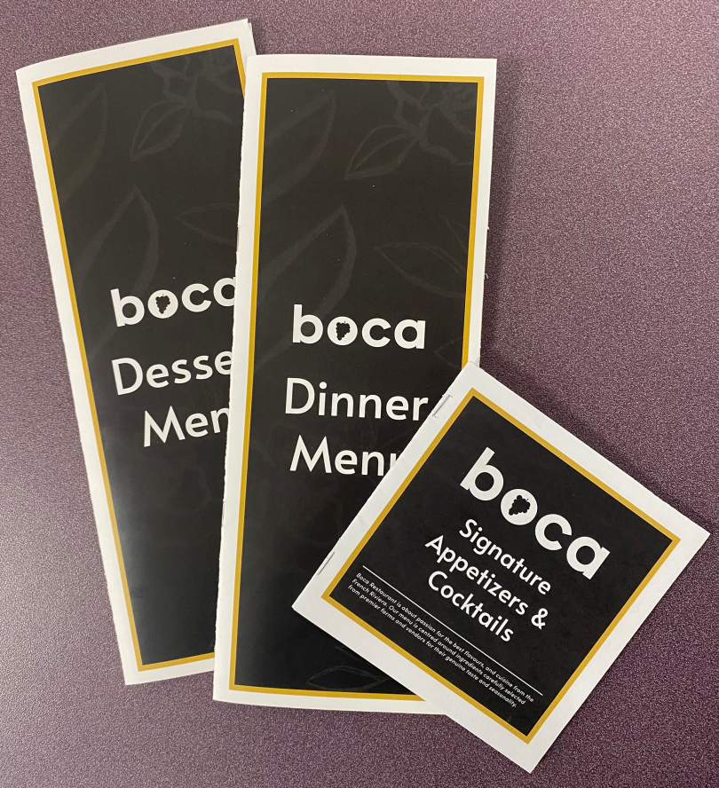

For this project we were given a business to create a logo and menus for. Using Photoshop, Illustrator and InDesign I put these pieces together. I created the logo in Illustrator, created the backgrounds in Photoshop, and placed the text and images in InDesign, as well as the dieline. The images were found online.
